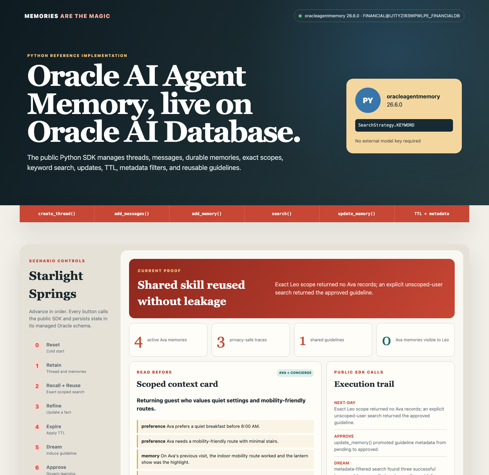

Oracle AI Database · AI agent memory · Continual learning
Memories Are the Magic: Build Governed AI Agent Memory with Oracle AI Database, Java, and Python
A runnable, presenter-ready demonstration of working, episodic, semantic, and procedural memory; Retain, Recall, Reuse, and Refine; lifecycle controls; and human-approved learning on Oracle AI Database.
By Paul Parkinson · Updated July 28, 2026
An AI agent does not become stateful because its model has a long context window. It becomes stateful when useful experience is deliberately captured, scoped, recalled, corrected, expired, and reused. This demo makes that external memory loop visible: read before the turn, write after the turn, and keep Oracle AI Database as the durable, transactional governance boundary.
The included Starlight Springs concierge remembers Ava's accessibility needs and preferences, builds a scoped context card, corrects a bad extracted fact, expires a temporary route closure, and turns repeated successful traces into a human-approved reusable skill. A second guest can use that shared skill without seeing Ava's private data.
The model reasons in the loop; the external memory substrate makes experience durable, scoped, correctable, and auditable.
Subtitle-led walkthrough of the public Python SDK, the Java implementation, the live Oracle AI Database results, and the governed learning loop. The video is intentionally silent so it can be narrated live or voiced later.
Key Takeaways
An agent is a loop with state. Durable memory is an external computational substrate, not a property of a single prompt.
Memory engineering adds writes, correction, scope, retention, and governance to retrieval. Read-only retrieval is RAG; read plus write becomes a memory lifecycle.
Continual learning can begin in token space: retrieve better context, induce structured skills, and require approval before reuse. Model-weight updates are a later option, not the default.
The Python reference uses the public oracleagentmemory SDK. The Java reference exposes the equivalent mechanics through Oracle JDBC, UCP, SQL, and JSON.
Oracle AI Database gives both demos transactions, identity scope, search, relational and JSON data, timestamps, and enforceable lifecycle state in one durable system.
Why Agents Forget
A stateless agent repeatedly re-onboards users, repeats failed approaches, and forgets what produced a good outcome. Trust cannot compound because experience disappears at the end of the call. A large prompt can postpone the problem, but it does not provide identity scope, correction, deletion, expiration, transaction boundaries, or a durable audit history.
An agent is still a loop: observe, plan, act, and evaluate. The model supplies reasoning inside that loop. External memory acts as a computational exocortex across loops, preserving selected facts and outcomes after the model invocation ends. The distinction matters because context-window contents are transient, while database records can have owners, versions, policies, and an audit trail.
Presenter thesis: “The durable competitive advantage is not one clever prompt. It is accumulated, governed experience that the right agent can recall at the right time.”
The Four Memory Types
Memory type
Question it answers
Demo example
Lifecycle
Working
What am I doing now?
“Build Ava a rain-safe evening plan.”
Active turn; not inserted into the durable memory table.
Episodic
What happened before?
The indoor mobility route worked and the lantern show was the highlight.
Durable event plus outcome; useful learning material.
Semantic
What facts should I know?
Ava prefers a quiet breakfast and needs a minimal-stair route.
Versioned, correctable, identity-scoped fact.
Procedural
How should I handle this pattern?
rainy-evening-reroute
Induced from successful traces; inactive until a person approves it.
These categories prevent a common design failure: treating every transcript fragment as equally durable. A live closure should expire; a confirmed accessibility preference can live longer; a reusable operational skill should contain the general lesson, not the original guest's private data.
From Prompt Engineering to Memory Engineering
Prompt engineering shapes one turn.
Context engineering assembles evidence for one inference.
Memory engineering manages useful state across interactions.
The memory lifecycle is easiest to remember as the four Rs:
Retain: extract and store useful facts, episodes, and operational state.
Recall: search inside the correct user, agent, tenant, status, and time scope.
Reuse: assemble a compact context card for the next turn.
Refine: correct, consolidate, version, expire, or delete state.
RAG versus memory: RAG retrieves existing knowledge. Agent memory includes the write-back and lifecycle that allow the system to change what it knows from later interactions. A production application often uses both.
This is the primary product path. The app creates a managed memory store, thread, messages, typed memories, metadata filters, exact user and agent scopes, updates, TTL, and shared guidelines through oracleagentmemory==26.6.0.
Java: transparent database mechanics
This companion implementation uses Java 21, Oracle JDBC, and UCP. Its AIM_DEMO_* schema makes transactions, correction history, recall auditing, traces, and approval state easy to inspect during a presentation.
Both implementations use deterministic extraction and skill induction for a repeatable live demo. They do not claim that the model retrained itself. The database behavior, SDK calls, search, transactions, identity scope, TTL, trace persistence, pooling, and human approval are real.
The Python SDK Configuration
The Python app deliberately selects Oracle Text keyword search so the demo requires no external embedding-model or LLM key. A production deployment can choose vector or hybrid retrieval when semantic ranking is needed.
The demo calls create_thread(), add_messages(), add_memory(), search(), update_memory(), and SDK deletion APIs. Exact user_id and agent_id matching makes the private recall boundary explicit. Unscoped-user search is a separate, deliberate operation used only for the approved shared guideline.
Two Implementations, One Scenario
Concern
Python reference
Java reference
Purpose
Demonstrate the supported Oracle AI Agent Memory API.
Expose underlying database patterns for teaching and inspection.
Database access
python-oracledb pool supplied to the SDK.
Oracle JDBC through Universal Connection Pool.
Storage
SDK-managed MAGIC_PY* objects.
Explicit AIM_DEMO_* tables and sequences.
Recall
Oracle Text keyword search plus exact identity scopes and metadata filters.
SQL predicates for identity, status, and TTL.
Correction
update_memory().
Atomic insert of version 2 plus supersede of version 1.
Best use
Start here for an application using the product library.
Use to explain or customize the persistence mechanics in Java.
Why Oracle AI Database Fits the Memory Substrate
Atomic correction: the app inserts a new fact version and supersedes the old one in the same transaction.
Structured scope before similarity: guest, agent, status, and expiration predicates are applied before context is built. At larger scale, Oracle AI Vector Search can add semantic or hybrid ranking alongside relational filters.
Relational plus JSON: enforceable lifecycle columns coexist with JSON metadata and skill instructions.
Operational governance: the database is the appropriate place to add least-privilege schemas, row-level controls, backup, and unified auditing for production.
Security boundary: this compact demo applies guest-and-agent scope in its SQL. A production design should also enforce authorization at the database tier, for example with separate schemas, roles, or Oracle Virtual Private Database. It should also treat stored memory as untrusted input because persistent prompt injection can survive across turns.
Set Up and Run the Demo
Both demos use an Oracle Database user and can reuse the repository's financial database wallet. The verified run shown below connected as FINANCIAL. Keep credentials and the wallet outside source control.
1. Configure the Shared Database Connection
If financial/setup/.env already works, both runners reuse it. Otherwise:
cd memory
cp .env.example .env
# Edit .env with DB_USERNAME, DB_PASSWORD, DB_SERVICE, and TNS_ADMIN.
# Do not commit the populated file or wallet.
2. Run the Python SDK Reference First
Use Python 3.10 through 3.13. The runner creates memory/.venv, installs the pinned public package, and starts the UI on port 8092.
cd memory/python-app
./test.sh
./run.sh
Open http://127.0.0.1:8092. To execute all steps through the HTTP API, leave the app running and use another terminal:
cd memory/python-app
./smoke-test.sh
The successful live run reported oracleagentmemory 26.6.0, six SDK-managed objects, four active Ava memories after correction and expiry, three privacy-safe traces, one approved guideline, and zero private Ava memories visible under Leo's exact scope.

Actual Python SDK run against Oracle AI Database after correction, TTL expiry, guideline induction, approval, and the Leo isolation check.
3. Run the Java and UCP Reference
The Java implementation requires Java 21 and Maven. It creates only missing AIM_DEMO_* objects and never drops the schema objects.
cd memory/app
./test.sh
./run.sh
Open http://127.0.0.1:8091. The automated proof is:
cd memory/app
./smoke-test.sh
Actual Java 21 and UCP run against the same Oracle AI Database, with the final next-day scope proof visible.
To inspect the Java implementation's versions, recall audit, traces, and approval record from SQLcl, run memory/database/inspect_demo.sql after the browser walkthrough. The Python implementation uses SDK-managed objects and should be accessed through the public APIs instead of relying on their internal schema.
Presenter-Ready Walkthrough
Use either UI's buttons in order. Start with Python to show the public Oracle AI Agent Memory API, then use Java when you want to open the SQL and explain each transaction. Each screen displays a short cue; the following script explains what to say, what executes, and what proves the concept.
0 Reset: Show the Stateless Starting Point
Say: “A model call does not carry durable experience by itself. At this cold start, Ava and Leo exist, but the agent has no saved facts, traces, or reusable skills.”
What happens: Python calls the SDK deletion APIs for the deterministic thread and shared records. Java deletes rows only from its five demo tables and recreates the two demo guest identities.
Proof to point at: the memory ledger, trace panel, and skill card are empty. Browser state is not the memory source.
1 Retain: Write Useful Experience
Say: “We retain selected state, not an undifferentiated transcript. Working memory stays in the active turn. Semantic preferences, an episodic outcome, and one temporary operational fact become durable records.”
What happens: Python calls create_thread(), add_messages(), and typed add_memory() operations with metadata and TTL. Java writes the same scenario to explicit records. Both retain four durable Ava memories, one temporary route fact, and three privacy-safe successful traces.
Proof to point at: every ledger row shows type, PRIVATE scope, source, version, status, and an expiration time where appropriate.
2 Recall + Reuse: Read Before the Turn
Say: “The system does not search all memory. It first narrows by guest, agent, active status, and TTL, then assembles a compact context card for this request.”
What happens: Python calls search() with exact Ava and concierge scopes, record types, and keyword ranking. Java applies the same identity, status, and TTL constraints in SQL and inserts one recall-audit row per selected memory.
Proof to point at: the context card contains Ava's facts and the live route closure. It also exposes a deliberately imperfect extracted fact, fireworks, so the next step can demonstrate correction.
3 Refine: Correct Without Losing History
Say: “Ava corrects us: lantern show, not fireworks. Durable memory must accept correction as data, not hope that a later prompt masks the error.”
What happens: Python calls update_memory() with guest-confirmed content and metadata. Java makes the history visible by atomically inserting version 2, marking version 1 SUPERSEDED, and linking the old row to its replacement.
Proof to point at: both versions remain in the ledger, but only the guest-confirmed lantern memory is active for later recall.
4 Expire: Enforce the Memory Lifecycle
Say: “Useful tonight does not mean true tomorrow. Retention policy is part of memory quality.”
What happens: Python uses an SDK TTL anchored to an event timestamp in the past; subsequent search excludes the record. Java marks the route row EXPIRED and applies the equivalent lifecycle predicate.
Proof to point at: the temporary fact remains auditable in the ledger but cannot influence the next context card.
5 Dream: Turn Traces into a Candidate Skill
Say: “Traces are the raw material for continual learning: what was asked, what was retrieved, what the agent did, and what outcome followed. We learn first in token space by inducing a structured reusable procedure.”
What happens: both versions detect three successful RAINY_EVENING_REROUTE traces. Python uses metadata-filtered search and stores a guideline memory; Java writes a PENDING skill with the same privacy-safe steps.
Proof to point at: the skill JSON explicitly says that no private guest data is included. No model weights changed.
6 Approve: Put Governance in the Learning Loop
Say: “The asleep or dream loop may propose a lesson; it may not silently promote one. A person reviews the abstraction before activation.”
What happens: Python calls update_memory() to promote the guideline metadata. Java updates the skill row. Both preserve the approver and timestamp.
Proof to point at: the approval-gated badge changes and the database retains who activated the procedure.
7 Next Guest: Reuse the Lesson Without Leaking the Memory
Say: “The following day, Leo encounters a similar rainy evening. He can receive the approved general workflow, but he cannot see Ava's breakfast, mobility, or entertainment preferences.”
What happens: Python proves that an exact Leo search returns no Ava record, then performs a separate unscoped-user search for the approved guideline. Java executes the corresponding private-memory and approved-skill queries.
Proof to point at: the UI displays 0 private Ava memories visible to Leo beside the approved shared skill.
Continual Learning: Token Space Before Weight Space
The Monday–Tuesday–Wednesday progression is simple: on Monday an agent explores and makes a recoverable mistake; on Tuesday a stateless agent repeats it; by Wednesday an agent with governed memory recalls the trap or approved procedure and avoids it. The fastest safe improvement is often external:
store a corrected fact;
retrieve a better example or context card;
induce a structured skill from successful episodes;
approve the skill and use it on the next run.
Fine-tuning, RLHF, or other weight-space changes can be valuable when the learned behavior must be compressed into the model or applied where retrieval is unavailable. They are slower to validate and harder to reverse, so they should follow evidence that external memory and skill retrieval are insufficient.
What an Experience Trace Must Preserve
A transcript alone does not say whether a choice worked. A useful trace connects four fields so later induction has evidence instead of anecdotes:
Trace field
Question
Starlight Springs example
Asked
What problem did the agent receive?
Reach the evening show during rain.
Retrieved
What evidence entered context?
Accessibility, covered connectors, and venue timing.
Action
What did the agent or tool actually do?
Move dinner earlier and route through the atrium.
Outcome
What happened next?
The guest arrived dry and before seating closed.
The Awake Loop and the Dream Loop
During the awake loop, the agent serves the current request and records a privacy-safe trace after the outcome is known. During the asynchronous dream loop, a separate process groups successful traces, proposes a generalized guideline, evaluates whether private details survived the abstraction, and submits it for human review. Approval activates the procedure; rejection or later rollback keeps the learning reversible.
Taking the Pattern to Production
Replace deterministic extraction with schema-constrained model extraction and validation.
Use Oracle AI Agent Memory for managed threads, messages, memories, context cards, metadata filters, hybrid retrieval, updates, and TTL where its API fits the application.
Add embeddings and Oracle AI Vector Search when exact and relational retrieval no longer provide sufficient semantic recall.
Enforce tenant and end-user authorization in both the service and database; audit reads as well as writes.
Run skill induction asynchronously, strip private details before generalization, require evaluation and approval, and retain rollback history.
Define deletion semantics carefully. Deleting a thread may need to remove or re-derive memories and summaries created from it.
Background extraction is generally eventually visible rather than immediately available. Applications that require read-your-write consistency should use an inline path or explicitly wait for the extraction job before relying on the new memory.
The Database Is the Memory System of Record
The model supplies reasoning; memory engineering supplies continuity. When identities, facts, episodes, traces, and procedures live in a governed database layer, an agent can improve without turning every prior interaction into an unbounded prompt or every private experience into a shared lesson.
The practical sequence is straightforward: retain deliberately, recall within scope, reuse compactly, refine continuously, and approve what becomes shared procedural memory. That is how experience compounds without giving up correction, lifecycle, or trust.
Frequently Asked Questions
Is AI agent memory just a vector database?
No. Vectors help semantic recall, but production memory also needs identity and tenant scope, record types, versioning, correction, TTL, deletion, transactions, and audit. This demo begins with relational predicates and JSON; Oracle AI Vector Search is an optional ranking layer.
Does continual learning mean this demo retrains a model?
No. It learns in token space by updating external state and proposing a reusable structured skill. The deterministic induction step is intentionally reproducible. Model-weight training is a separate, later decision.
Does the demo use Oracle AI Agent Memory?
Yes. The Python reference uses the public oracleagentmemory 26.6 package for managed storage, threads, messages, typed memories, search, exact scopes, updates, metadata filtering, and TTL. The separate Java reference implements the scenario directly with JDBC, UCP, and SQL so the underlying database transactions remain easy to present and inspect.
Why are there both Python and Java implementations?
Python demonstrates the current public Oracle AI Agent Memory API. Java demonstrates how the same memory lifecycle maps to explicit relational and JSON records, SQL predicates, and transactions. They are complementary references, not two services that must run together.
How does the demo prevent Ava's memory from leaking to Leo?
Private memories carry a guest and agent scope, and recall filters on that scope before building context. The learned skill is stored separately as shared procedural memory and contains only generalized steps. Production deployments should reinforce that application rule with database authorization and row-level controls.